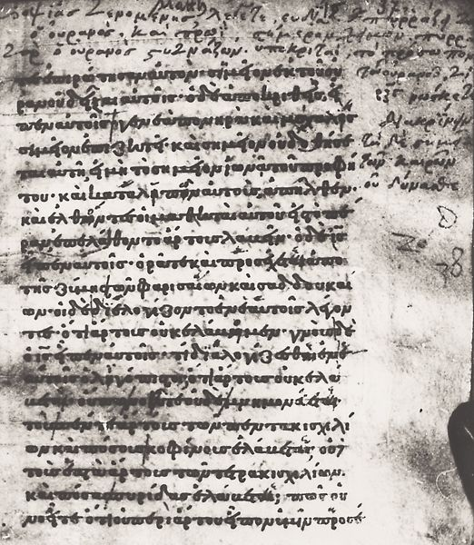
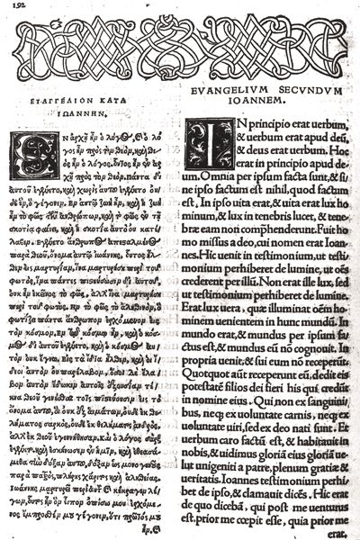

The Formation of the New Testament Canon
To speak of the NT “canon” is to refer to the collection of writings regarded by the Christian community to be of unique and normative significance for its life and thought. Those writings thus represent the standard or norm of belief and practice for the Christian community. Such a canon is simply an expression of the authority acknowledged by, and functioning within, that community.
In the following pages we will investigate the way in which certain authoritative writings were singled out as adequate to perform this canonical function, review the various changes that occurred in that collection of normative literature, and identify the criteria that were applied in that rather lengthy and complex process of selection.
The formation of the canon represented the working out of forces that were already present in the primitive Christian community and that would have made some form of canon virtually inevitable. Certain external pressures on that community, however, also contributed to the content and shape of the final canon, and we must examine them as well. As we shall see, the process of forming and finally “closing” the canon was simply an outgrowth of the process by which traditions produced by, and preserved within, the Christian community were collected, reworked, and combined into the books themselves that finally comprised the canon. In that sense the canon is the end of the process begun when first Israel and then the primitive Christian community sought to preserve for future generations accounts of events that were foundational for their respective communities. It is the traditions that grew out of such a desire to preserve the memory of foundational events — the exodus of Israel from Egypt, the captivity in Babylon, the resurrection of Jesus — that were finally written, organized, and preserved in the canon.
25.1. INTERNAL FORCES AFFECTING THE SHAPE OF THE CANON
25.1.1. The Shape of the Church’s Commission
The very nature of the early Christian community displays certain characteristics that from the outset played a part in shaping the final canonical collection of literature. The early community understood itself to be commissioned by its risen Lord to spread the good news of the imminent incursion of God’s rule into the world. Jesus himself had sent out his followers to announce such news (Mark 3:14 and parallels for the twelve; Luke 10:1–12 for the seventy), as indeed he had announced he would when he called his first followers (see Mark 1:16–20 and par.; the phrase “fishers of men” implies such missionary activity). The Gospel of Matthew closes with the risen Christ commissioning his closest followers to undertake a worldwide mission of witness to what he had said and who he was.
If such a worldwide mission was to be undertaken, it would require missionary activity by more than simply the twelve closest followers of Jesus. Others would have to be, and were, involved in such missionary outreach, as the book of Acts makes clear. The danger that arose when that wider missionary proclamation was undertaken was that the information about Jesus that made up the content of that early preaching would be diluted or distorted. Preachers would undertake the missionary task who were not reliably acquainted with the traditions about Jesus (an example of that can be found in Acts 18:24–26) and who would then have to be corrected by people better acquainted with those traditions. Yet even such reliable people would be in too short supply as the community began to grow and spread ever more widely. Some more reliable method needed to be found to preserve the integrity of the Christian proclamation throughout the missionary movement.
Two types of literature grew up to meet such needs. One consisted of reliable accounts of the career and teachings of Jesus. They were drawn up for a variety of purposes: they could be used as handbooks by preachers; they could be used for missionary purposes such as the conversion of those who read those accounts; they could also be used to correct false impressions and false practices within the communities to which they were addressed. Such collections of traditions about Jesus were eventually refined into the Gospels as we know them in the NT.
A second type of literature produced to exercise oversight over the faith of mission communities was the pastoral letter, designed to meet and correct problems that arose when no reliable missionary could be present (Galatians is such a letter). In that way, the authority of the apostle could be exercised over a wider geographic area and with a larger time frame than the physical presence of the missionary made possible.
The Christian community’s understanding of its mandate as one of proclaiming the good news about Jesus and about what his career meant for the relationship between God and the human race carried within itself, therefore, the twofold structure of the faith that came to be expressed in the division of the NT canon into Gospels (Lord) and epistles (the witness of followers). While this distinction within the canon was not in fact carried through for more than a century after the Christian community was formed, the very nature of the Christian faith is reflected in it and perhaps made such a shape inevitable for its canon.
25.1.2. The Use of the Jewish Scriptures
Another factor that influenced the primitive community in its writing and collection of literature that was eventually to become canonical is found in the fact that the Christian community understood itself as an outgrowth, indeed as the fulfillment, of Judaism. Jesus was understood to be the fulfillment of both the law (Pentateuch) and the prophets (see Matt 5:17), and the writings of the Jewish community, interpreted in light of the Christian faith, continued to be used well into the second century as primary sources for the missionary activity of the primitive community. Indeed, in virtually every NT reference to Scripture, the material quoted comes from those writings taken over from the Jewish community, that is, from what Christians call the “Old Testament.”
It was this appropriation of the authoritative writings of the Jewish community that represented a further impetus toward the formation of a Christian canon. It demonstrated the value of written documents for the life of a community of faith and in that way hastened the production of specifically Christian literature. The use of the Jewish writings as “Scripture” also opened the way to regarding specifically Christian literature in a similar way. The reference in 2 Pet 3:15–16 to the letters of the apostle Paul as “Scripture” shows that this process had begun at an early stage in the development of a body of Christian literature.
It would be incorrect to speak of the influence of a Jewish “canon” at the time the Christian community began, if by “canon” we mean a collection of books that is complete and closed and on which there is universal agreement. An attempt to define such a collection of Jewish writings did not occur until the end of the first century (at Yavneh, about 90 CE), perhaps in response to the appropriation by the Christian community of the Jewish Scriptures, but even then it is probably incorrect to speak of any kind of closed Jewish canon. Nevertheless, the presence in the Jewish community of a collection of authoritative writings exerted a significant influence in the direction of the formation of a similar body of authoritative literature indigenous to the Christian faith.
A third factor at work in the Christian community was simply the passage of time. The primitive community had within it persons who had known the earthly Jesus and/or had seen him after he rose from the dead. In that situation, although the production of literature for internal use was important, the community was still small enough that an authoritative person (e.g., an apostle) could be called on to resolve disputes within individual congregations. If an apostle could not be there in person, he could at least send a letter answering questions that arose (as in 1 Corinthians).
As time passed, however, and the community grew larger, such an appeal became more difficult. Even more, as the years passed, the first generation, the apostles and others who had known Jesus personally, began to die out. It thus became apparent near the end of the first century that the community faced a future in which it would be impossible to appeal to a member of that generation to resolve problems that arose.
If an apostle could no longer be called upon to resolve disputes, the only recourse was to comb the writings of the apostles for hints about how problems were to be resolved. That in its turn meant that certain writings now had to carry the importance that the eyewitnesses themselves had carried. Instead of receiving solutions to problems directly from the apostles themselves, the community now had to resolve such problems by interpreting the apostolic traditions. In other words, instead of the apostles bearing authority, that authority now had to be vested in the apostolic traditions.
But where was true apostolic tradition to be found? After all, anyone could claim apostolic authority for a position, and it could no longer be verified by direct appeal to that apostle. And where was the valid interpretation of apostolic tradition to be found? After all, anyone could claim validity for his or her opinion, and it could no longer be verified by asking the apostle directly. A writer of the early fourth century, Eusebius, attests the crisis that the death of the first generation precipitated: “But when the holy group of the Apostles and the generation of those to whom it had been granted to hear with their own ears the divine wisdom had reached the ends of their respective lives, the federation of godless error took its beginning through the deceit of false teachers who, noting that none of the Apostles still remained, barefacedly tried the counter-proclamation of ‘knowledge falsely so-called’ against the proclamation of the truth” (Hist. Eccl. 3.22.8).
25.2. EXTERNAL FORCES AFFECTING THE SHAPE OF THE CANON
The Christian community was not given the luxury of working out its canon at leisure. External pressures hastened and shaped the process of canon formation and invested what otherwise might have been a leisurely process with life-and-death urgency.
25.2.1. Marcion’s Canon
The earliest of those external forces was exerted by a man named Marcion. The son of a wealthy shipbuilder, Marcion came to Rome from Sinope in Pontus (in present-day Turkey), became a member of the church there, and supported it generously. About the year 144, however, it became evident that his understanding of the Christian faith was radically different from that of the Roman Christian community, and Marcion withdrew to form his own church. Believing all of material creation to be evil, the work of a vengeful god who was ignorant of the higher God of love, Marcion held that the redemption Christ brought sprang from the desire of the higher God to redeem those who accepted Christ from the evils of this world.
Since the vengeful god was the one to whom the Jewish Scriptures point, in Marcion’s view, Christ did not come to fulfill, but to abolish the law and the prophets. For Marcion, the Jewish Scriptures had only negative significance; it was from such a religion that Christ had come to redeem humanity.
Because Marcion could therefore not call on the OT writings as an authoritative body of literature, as did the Christian community at that time, he substituted for those writings the letters of the apostle Paul, in whom Marcion found opposition to the Jewish law, and the Gospel of Luke, which he found to be “Pauline” in its theology. In order to conform those documents more closely to his point of view, Marcion apparently purged from Paul’s letters passages that spoke in a positive way about the Jewish faith, its law, and its prophets and similarly excised from Luke material that showed OT influence, including the first two chapters of the Gospel.
Marcion seems to have been the first, therefore, to form a specifically Christian collection of authoritative literature. Yet he had appropriated that literature to support religious views that the Christians in Rome and elsewhere felt compelled to reject. The Christian community thus faced a problem: could they afford, in rejecting Marcion and his views, also to reject the literature he claimed to support such views, namely Paul’s letters and the Gospel of Luke? If not, how could that literature be reclaimed? Marcion thus forced the Christian community to hasten the process of deciding what literature was indispensable and what was not.
Instead of rejecting the literature Marcion had appropriated, the community retained both the letters of Paul and the Gospel of Luke, thus confirming in their literature a structure (Gospel, Apostle) which, as we have seen, was inherent in the Christian faith (Lord, followers). The community further affirmed that there were also other Gospels of equal authority to that of Luke and other epistles of equal authority to those of Paul. From other early Christian writings it is obvious that by the time Marcion appeared in Rome, all the literature contained in our present NT had been written, along with a good deal of other Christian literature. The Christian community therefore did not create what came to be regarded as canonical literature to combat Marcion. Rather, it simply reaffirmed that its basis of authority was broader than one Gospel and one apostle, and it reaffirmed the authority of the writings of the Jewish community of faith as well (i.e., the OT).
25.2.2. The Montanists
A second external factor that played a significant role in the way the Christian community understood its own canonical literature was the movement centering around Montanus. Montanus appeared in Phrygia (also in present-day Turkey) about the middle of the second century and announced that, with his appearance, the final stage of Christian revelation, the time of the Paraclete (the Holy Spirit; see John 14:16, 26; 15:26) was at hand. He affirmed that the end of the ages was therefore imminent and that the New Jerusalem (see Rev 21:2) was at hand. He also called for a more rigorous ethical life and forbade all attempts to escape the persecutions being visited on the Christian communities. Accompanied by two “prophetesses” (Maximilla and Priscilla), Montanus traveled widely, announcing the new age of the Spirit and the end of the world. In many ways, Montanus and his followers appeared to be a renewal of the apocalyptic fervor of the earlier Christian communities.
Because Montanus claimed powers promised in a writing that was widely accepted as authoritative (the Gospel of John), and seemed to renew the early fervor of the Christian movement, he represented a significant alternative to the other Christian communities. How was his influence to be countered? The Christian community could not deny that the Holy Spirit had been promised to them, but they could, and did, deny Montanus’s claim that that Spirit spoke as authoritatively through him as it had through the apostles of Christ. But to do that, the Christian community had to affirm that the apostolic period was normative for the understanding of any further communications from the Spirit. Since the followers of Montanus also produced a body of literature, the Christian communities who opposed him had to affirm that only those writings that drew on apostolic traditions were authoritative and were therefore the norm for the faith of the community.
25.2.3. Other Non-Orthodox Movements
The second and third centuries saw other movements that understood themselves as representing truer expressions of the Christian faith than that represented by the more “orthodox” communities, and each of them appears to have produced its own body of literature. The most prominent among these are the Gnostic movements, which in one form or another announced a secret knowledge that would deliver the Gnostic initiate from the evil realm of matter to the superior realm of the spirit. Several “gospels” were produced by these movements (e.g., the Gospels of Truth, of Philip, and of Thomas), each purporting to contain the secret and thus true teachings of Jesus. Although they produced no new apostolic epistles, they did appropriate Paul, through allegorical interpretation, as a witness to their beliefs.
It was in the context of such varied claims to the truth of the Christian faith that the “orthodox” communities argued about which writings could be regarded as authoritative and hence as properly belonging to a canon that alone would provide the norm by which true Christian faith was to be measured. We must now look at the actual process of sifting books as it proceeded in the first three centuries after the birth of Christ, and then examine the criteria by which some books were chosen and others rejected.
25.3. THE GROWTH OF THE NEW TESTAMENT CANON
We would have quite a false understanding of the process of canon formation if we were to imagine that it was limited simply to deciding whether or not the twenty-seven books now included in the NT canon belonged there. It would be false on two counts. First, the total of twenty-seven books was only agreed upon late in the process of canon formation; earlier writers tended to limit the number to twenty or twenty-two. Thus, we must not imagine a process in which, as it were, all twenty-seven books were lying on a table in a conference room with church authorities discussing them one by one to determine whether to include them. As we shall see, such a “conference” never took place.
Second, such an understanding is false because it does not take into account the large amount of literature circulating in the Christian community by the second century. The canonical process was one that had as a major component the determination of which writings from that mass of literature produced in the first century should even be considered as candidates for authoritative status. Nor did the flow of literature cease with the close of the first century. Gospels and epistles continued to be produced until well into the second century, so the Christian communities had to be engaged in a continuing process of deciding which books were to be held as canonical, that is, as normative for faith and practice, and which were not. Gospels such as those of Truth, of Philip, and the like, produced by the Gnostic movements, were never serious candidates for canonical recognition, but other Gospels, such as the Gospel of the Hebrews and the Gospel of Peter, were known from early times and were quoted by some early Christian writers. In addition to a larger number of Gospels, there were many epistles, again of early origin and quoted by early Christian writers, such as the Epistle of Barnabas and the correspondence between Jesus and Abgar, about which decisions had to be made. There was still other literature, such as the Teaching of the Twelve Disciples (= the Didache), the Shepherd of Hermas, a variety of Acts of individual apostles (Thomas, Matthew, Peter, Paul and Thecla, and others), as well as numerous apocalyptic writings besides the Revelation of John (apocalypses of Peter, Paul, Thomas, and of Stephen). All these and more were circulating, and some communities found one or more of them useful for instruction or for reading in their worship services. That meant that those writings also had claims to authoritative status that had to be weighed and evaluated.

Minuscule 2e, a twelfth-century Greek manuscript, here showing Matthew 16:1–11 with marginal notes added by Erasmus of Rotterdam in the sixteenth century
Alongside such written material, oral traditions about Jesus continued to circulate, some similar to, but some also quite different from, the traditions contained in the four Gospels we have in the NT. An early second-century Christian, Papias, is reported to have said that he preferred oral to written sources of information about Jesus: “For I did not suppose that information from books would help me so much as the word of a living and surviving voice” (reported in Eusebius, Hist. Eccl. 3.39.4). Justin Martyr, writing later in the second century, knew and included in his writings a number of such sayings of Jesus that are not in our four Gospels, showing how persistently such sayings survived. Justin evidently thought they had equal authority to the words of Jesus in the written Gospels. But if writings could be produced in the names of various apostles, it would be even easier to produce unwritten sayings of Jesus. Apart from a written source, how could the authenticity of such sayings be validated? The Christian community had to decide what to do about the authority of these oral sources as well.

The beginning of the Gospel of John in Erasmus’s 1516 Greek-Latin edition of the New Testament
Given the mass of literature that was circulating and even being produced on into the second century and beyond, it is surprising how quickly agreement was reached on a core of writings acknowledged to be authoritative. From quotations of sayings of Jesus in what are called the writings of the Apostolic Fathers (Christians from the generation after that of the apostles) who wrote in the later first and early second centuries, it is evident that our four canonical Gospels not only nearly exhausted the reliable traditions about sayings of Jesus, but also that all four were already widely known in many Christian communities. A consensus had therefore emerged by the end of the first century that the Gospels of Matthew, Mark, Luke, and John were significant sources of information about, and authoritative expressions of, the Christian faith. The question to be decided was thus whether one or more other Gospels (such as the Gospels of Peter or of the Hebrews) ought to be added to those four.
An early consensus seems also to have arisen concerning the letters of Paul as authoritative documents of the Christian faith. In late first-century and early second-century Christian writings, there is no unanimity on how many letters Paul had written. Some thought Paul had written Hebrews, others did not. Marcion knew a letter of Paul to the Laodiceans (see Col 4:16), which others doubted Paul had written. Most of the letters of Paul present in our NT, however, were already known and widely regarded as authoritative by the first decades of the second century. Letters from the three “pillars” of the Jerusalem community — Peter, James (Jesus’ brother, not the James who was the brother of John), and John, so identified by Paul in Gal 2:9 — were also known and highly regarded, although there was no unanimity on how many from each author ought to be accorded authority.
In addition to these Gospels and letters, other literature was highly regarded such as the Acts of the Apostles, the Shepherd of Hermas, the Revelation of John, the Revelation of Peter, the Gospel of Peter, and the Epistle of Barnabas.
25.4. THE PROCESS OF CANONICAL SELECTION
The recognition that some form of written authority was necessary in order to maintain the purity of the faith was one thing; agreeing on what those written authorities ought to be was another. We have already seen that the Scripture of the Christian community from the outset was the OT, in most cases in its Greek translation (the “Septuagint”). Paul quoted from many of its books in his letters, Jesus is remembered to have used it as authoritative, and the Gospel writers also made use of it in their interpretations of Jesus’ mission, understanding him to have fulfilled the promises about the Messiah contained in the Jewish Scriptures.
In the second century, Justin reported that our four Gospels were held to be of equal value with the Jewish Scriptures. Another writer of about the same time, Irenaeus, a bishop of Lyon in France, not only knew of our four Gospels but also held in high regard the letters of Paul, 1 Peter, and 1 John. In addition, he named as “Scripture” the Shepherd of Hermas and the Wisdom of Solomon and saw no reason to question the authoritative nature of the Revelation of John. It is clear, therefore, that by the last quarter of the second century a collection of specifically Christian writings was beginning to emerge as authoritative and to be used alongside the Jewish Scriptures.
While all four Gospels were generally acknowledged at this time, there was still some doubt about the Gospel of John, perhaps because of the use made of it by Montanus and some Gnostics. Even as late as the early third century, a bishop of Rome, Hippolytus, felt it necessary to defend the validity of that Gospel against attacks on it by a certain Gaius.
A good summary of early views about which books were considered authoritative is found in a list called the “Canon Muratorianus,” named after Muratori, a librarian in Milan who discovered and published the list in 1740. It seems to come from some time in the later second or early third century and appears to have been translated from Greek (our only text is in Latin). Although the beginning is lost, it includes as authoritative the Gospels of Luke and John (the lost beginning very likely names Matthew and Mark), the Acts of the Apostles, thirteen letters of Paul (Hebrews is omitted), Jude, 1 and 2 John, the Wisdom of Solomon, the Revelation of John and the Revelation of Peter, although it is conceded that this last one is not universally recognized. The list rejects letters of Paul to the Laodiceans and to the Alexandrians that were apparently also circulating, along with the Gnostic Gospels and the writings of Marcion and Montanus. The Shepherd of Hermas is also mentioned as useful but not to be read publicly in the churches. We do not know how widely the views contained in the Canon Muratorianus were held, but the list does show that what we know as the canon had not yet emerged, since some of our NT books are missing (Hebrews, 3 John, James), and some others not in our NT were still present (Wisdom of Solomon).
With the appearance of Origen (185–251) the collection of Scripture we know as the “New Testament” (Origen used that designation for Christian Scriptures) began to emerge, although still in somewhat shortened form. He acknowledged as Scripture (and probably by now as “canonical” as well) the four Gospels and Acts, fourteen letters of Paul (including Hebrews, even though Origen did not think Paul wrote it), 1 Peter, 1 John, and the Revelation of John. Absent are 2 and 3 John (Origen knew them but doubted their genuineness), 2 Peter (also known but doubted), James, and Jude. It is noteworthy that Origen introduced three categories of Christian writings: in addition to those surely to be regarded as authoritative and those surely not to be so regarded, Origen included a third category, those about which opinions differed. The third category is most interesting for our purposes, since the books in our NT that Origen omitted from the first category he included in the third category, along with the Shepherd of Hermas.
Eusebius, our source for much of our knowledge of the first three centuries of the Christian community, still retained this threefold classification. Eusebius reckoned as genuine the four Gospels, Acts, fourteen letters of Paul, 1 John, and 1 Peter. Disputed books included James, Jude, 2 Peter, and 2 and 3 John. Interestingly enough, he included the Revelation of John in both the recognized and disputed categories, indicating the division of opinion that persisted about that book. By his time, the Shepherd of Hermas, the Epistle of Barnabas, the Apocalypse of Peter, and the Wisdom of Solomon had all disappeared from serious contention as canonical Christian Scripture. It is clear from this that the canonical process was more a paring down of a larger list than the expansion of a narrower list, and that acceptance on one list did not mean acceptance by a later generation.
It was not until the year 367 that a list of Christian Scriptures as we know them in the NT finally appeared. In his thirty-ninth festal letter, published in 367, Athanasius, then bishop of Alexandria, listed our twenty-seven books as the “springs of salvation” and as included in “the canon.” The books from Origen’s and Eusebius’s “disputed” lists were not included, and those in the “rejected” category were also specifically rejected: Wisdom of Solomon, Shepherd of Hermas, Sirach, the Teaching of the Apostles (Didache), and some others. They can be used with profit as “reading matter” but not as canonical, that is, as the rule of Christian doctrine and action. Athanasius makes it clear enough that the idea of a Christian canon has now fully emerged, even though it is still not universally recognized and will not be by Christians from Syria until early in the seventh century.
It is worth noting that the process of selecting authoritative books grew out of the life of the Christian community, as that community used those books and found some more valuable than others, rather than being determined by some assembly of church officials. In a sense, the canon developed with the community. It therefore grew up out of the community, from the grassroots, as it were, rather than having been imposed from above by some authoritative person or council.
25.5. CRITERIA OF CANON SELECTION
Because the canon represents a collective decision reached by the Christian community at large over a period of centuries, we will not find a document in which the criteria for canonicity are given in detail. We will have to determine what those criteria were from hints given by second- and third-century authors when they discuss which writings they thought were authoritative for the Christian community, and which were not. We need also to keep in mind that even after a given criterion was accepted, problems could arise when someone attempted to apply that criterion. If authorship by an apostle, for example, were a criterion for regarding a writing as authoritative, the decision still needed to be made about whether or not an apostle wrote a certain book. The Revelation of John was attributed to Jesus’ disciple John but also to the Gnostic Cerinthus. James was attributed variously to James the brother of Jesus or James the son of Zebedee, the brother of John. Whether or not Paul wrote Hebrews was also, as we have seen, open to debate.
Some hints about the criteria by which a group of canonical writings was selected from the many writings circulating in various Christian communities in the second through the fourth centuries have appeared in our discussion of the various categories into which Christian writings were placed. Some authors, for example, implied that their reason for attributing authority to a given writing was that it was highly valued by a number of Christian communities. Other authors mentioned the fact that some writing was cited in another, early writing as a reason to take the book seriously. We have already mentioned the criterion of apostolic authorship. Similar to it is the criterion of apostolic tradition: does the writing in question represent the kind of Christian teaching associated with the apostles? We need now to look at each of these criteria to see how it was applied and which of them seemed to be more important.
25.5.1. Use of a Writing by the Community
As we have seen, public reading of Christian writings, as well as portions of the OT, was a regular part of the primitive community’s worship. Justin Martyr mentions readings from the apostolic memoirs and from the prophets. Dionysius, a bishop of Corinth in the second century, wrote to Soter, bishop of Rome: “Today we observed the holy day of the Lord and read out your letter, which we shall continue to read from time to time for our admonition, as we do that which was formerly sent to us through Clement” (quoted in Eusebius, Hist. Eccl. 4.23.11). That was not a unique occurrence. Eusebius, writing of the same epistle sent by Clement to the churches in Corinth near the end of the first century (we know it as 1 Clement), remarked that “We have ascertained that this letter was publicly read in the common assembly in many churches, both in the days of old and in our own time” (3.16.1).
That such public reading of Christian literature goes back to the earliest times of the Christian community we know from some of the literature produced at that time. In the NT letter to the community at Colossae, the author, writing in the name of Paul, exhorts the recipients to read the letter publicly and then to exchange it for a letter written to the community at Laodicea (Col 4:16). There is every likelihood that the other letters of Paul were intended similarly to be read publicly to the community, most likely in a setting either of worship or of instruction.
It is clear from this that the practice of reading Christian literature aloud in contexts of worship and catechetical instruction caused certain Christian communities to value what they found useful for such purposes. The public reading of material therefore elevated that material, as it were, to candidacy for inclusion in the canon. But it seems to have functioned in a negative rather than a positive way to this extent: unless a writing was used publicly in worship by some community, it could not be taken seriously as a normative statement of the faith, but such public use alone was not enough to confer normative (or canonical) status on such a writing.
25.5.2. Quotation in Ancient Authorities
Quotation in ancient (i.e., early Christian) writings was important, because it was a part of the intellectual environment of the Hellenistic world to revere what was ancient and to question what was new. In that kind of cultural and intellectual milieu, to prove a thing ancient and traditional is very close to proving it true, and thus writings that contain truth must be of an early origin. Finding Christian literature that was quoted in the very early years of the primitive Christian community would thus be desirable, if not absolutely necessary, in order for that literature to be taken seriously as a possibly normative expression of the faith.
Important as such quotation in early authorities might have been, however, such mention by itself was again not sufficient to guarantee inclusion, finally, in the Christian canon. As in the case of public use, quotation by ancient authorities lent authority to a given writing, enabling it to be used by the community, and placing it in candidacy, as it were, for canonical inclusion. But by itself, such attestation was once again not the major consideration.
The major consideration for final inclusion in the canon emerges with some clarity from precisely those writings of the second through the fourth centuries which we have been considering. It was whether or not the writing could sustain for itself a claim to apostolic origin. Yet how that “apostolic origin” was understood and how it was demonstrated present a more complex picture than we might at first suspect.
The most obvious way to demonstrate apostolic origin for a writing would be to claim that it was written by an apostle. For that reason, there was a good deal of discussion in the early Christian community about whether or not a given writing could legitimately claim to have been written by an apostle. The Gospels of Matthew and John, for example, were accepted as having been written by the two apostles who bore those names, and Mark and Luke were held to reflect the preaching of Peter and Paul respectively. Those who rejected the Revelation of John did so, with some regularity, by denying that its author could have been the same person as the apostle who wrote the Gospel of John, thus effectively denying to the Revelation apostolic authorship.
Yet the picture is complicated by the fact that some accepted the Revelation of John who also remained unconvinced that the apostle John had written it. Dionysius, a bishop of Alexandria in the mid-third century, in discussing the authorship of the Revelation of John, wrote: “That [the author] then, was certainly named John and that the book is by one John, I will not gainsay. . . . But I should not readily agree that he was the apostle, the son of Zebedee, the brother of James, whose are the Gospel entitled According to John and the Catholic Epistles” (quoted in Hist. Eccl. 7.24.7). In a similar disregard for authorship, Eusebius quotes Origen, who accepted Hebrews as normative, as saying about its author: “But who write the epistle, in truth God knows,” the implication being that Origen himself certainly did not (6.25.14).
That same Dionysius carried out what even by modern standards must be called a sophisticated analysis of the language, style, and content of the Johannine literature and came to conclusions virtually similar to those currently held by many modern scholars, namely that Revelation and 2 and 3 John were written by an author other than that of the Gospel and 1 John (reported in Hist. Eccl. 7.25.19–27).
It is therefore somewhat simplistic to argue that, since those who collected the canon did so on the basis of beliefs about the apostolic authorship of the NT books we can no longer share, the modern Christian need no longer take seriously their decisions about the canon. In fact, apostolic authorship, while valued, was not the sole, or even always the major, factor in determining the apostolic origin of the material.
It was not authorship but content that was the determining factor. The reason is clear enough: most later forgeries were also written in the names of the apostles, thus rendering such apostolic identification invalid as a primary consideration. Eusebius, discussing the various forgeries that bear apostolic names, points specifically to the fact that in such forgeries “the type of phraseology differs from apostolic style, and the opinion and tendency of their contents is widely dissonant from true orthodoxy” (3.25.6–7). Similarly, Serapion, bishop of Antioch in the late second century, was asked by some members of his community if the Gospel of Peter could be used as authoritative for the Christian community. He answered in the affirmative on the basis of its reputed authorship. When, however, he read the “Gospel,” he withdrew his approval, since the content was not such as to uphold its claim to apostolic origin (see Hist. Eccl. 6.12.2–6). Clearly enough, it was the content of a given writing, not the person who may or may not have written it, that in the final analysis determined whether it would be included in the canon.
What all of that demonstrates is that before the limits of the canon of authoritative writings were determined, a criterion was already in operation that enabled those early Christians to differentiate writings to be accorded normative status from those that were not, regardless of a writing’s claims about authorship. That criterion came to bear the name regula fidei or “rule of faith.” Perplexing as it may seem, however, during a major portion of the period of canon formation, that rule of faith had received no fixed formulation. Such fixed formulations were to begin only with the confession adopted at the Council of Nicea in 325.1 Nor was there a major expression of that rule of faith apart from the writings that eventually were included in the canon. Therefore, if the community selected the books to be included in the canon, those books themselves contained the criterion the community applied in their selection. It was, to be sure, as circular a process as it appears, but that is how, as nearly as we can determine, the canon was formed. Certain writings grew out of the common faith of the Christian community and were judged by the community, over many decades and through intimate use, to be clear and hence authoritative expressions of that common faith.
The process of canonical selection was therefore virtually identical to the process by which, for example, those traditions of the sayings and acts of Jesus were selected that were finally included in the four Gospels. The Gospels do not understand themselves to be exhaustive records of everything known about what Jesus said and did. John 20:30 and 21:25 make that abundantly clear, as do the frequent summaries of Jesus’ activity contained in the Synoptic Gospels. It was the experience of the community that, so it appears, led to some traditions being included in the Gospels and others omitted. In the same way, it was the common experience of the community with a wide variety of early Christian literature that it studied, proclaimed, and read in its worship that finally, over the course of two or three centuries, led that community to decide which individual writings from that literature represented the normative expression of that rule of faith, the regula fidei.
There were, in summary, a number of factors that led the early community to take seriously as normative for its faith and practice a wide variety of Christian writings. The use of such writings in the public worship of the community, their attestation in other early writings, and the claim to authorship by an apostle all caused such literature to be taken seriously by the community as an expression of its common faith. But in the final analysis, only those books became normative, and hence were included in the canon, that in the judgment of the community contained the purest form of the rule of faith. That judgment was based on content, as we have seen from our survey of a number of authors from the period during which the process of canonical selection was underway.
One can say, therefore, that the formation of the canon was coterminous with the life of the Christian community during its first three centuries of existence. It is not the case that some synod or council of bishops decided which books should be normative and thereafter required for Christians to accept. Rather, the books that finally were included in the canon were included because over the centuries Christians had come to use them in their worship and instruction and to revere them for the power they displayed in engendering, enriching, and correcting Christian faith. The canon thus represents the collective experience and understanding of the Christian community during the formative centuries of its existence.
FOR FURTHER READING
F. F. Bruce, The Canon of Scripture (Downers Grove: InterVarsity, 1988)
Harry Y. Gamble, The New Testament Canon: Its Making and Meaning (Philadelphia: Fortress, 1985)
Bruce M. Metzger, The Canon of the New Testament: Its Origin, Development, and Significance (Oxford: Clarendon, 1987)
Wilhelm Schneemelcher, New Testament Apocrypha, translation ed. R. McL. Wilson, I: Gospels and Related Writings (revised ed., Louisville: Westminster/John Knox, 1991), pp. 10–50
B. F. Westcott, The Canon of the New Testament (sixth ed., New York: Macmillan, 1889)
1. The so-called “Apostles’ Creed,” though it contains phrases from the earliest period of the Christian faith, did not receive its present formulation until sometime in the sixth or seventh century. Its origin is unknown, and it never was accepted as authoritative by the Eastern Orthodox churches. It therefore could have played no role in defining the content of the “rule of faith” during the period of canonical formation.